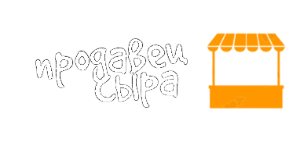
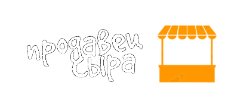

Гауда — это полутвердый сыр, который
изготавливают из коровьего молока. Он
отличается плотной, но в то же время
эластичной текстурой и характерным
сладковатым вкусом, который становится
более насыщенным и острым по мере созревания.

Чеддер – твердый сыр желтоватого или
оттенка слоновой кости цвета, с ореховым
вкусом и слегка кислым и острым привкусом.
Самый популярный сыр в мире особенно его любят
в Англии, где находится родина сыра чеддер.
Около половины сырного рынка Великобритании
приходится именно на чеддер.

Рокфор — самый популярный во Франции голубой сыр,
который принято подавать с белым сотернским вином
в конце обеда.Вызревает в каменных гротах на юге
Франции, где в естественнойсреде растет плесень
Penicillium roqueforti. Для производства сыра,
впрочем, эту плесень разводят на специально
испеченном ржаном хлебе.
 
